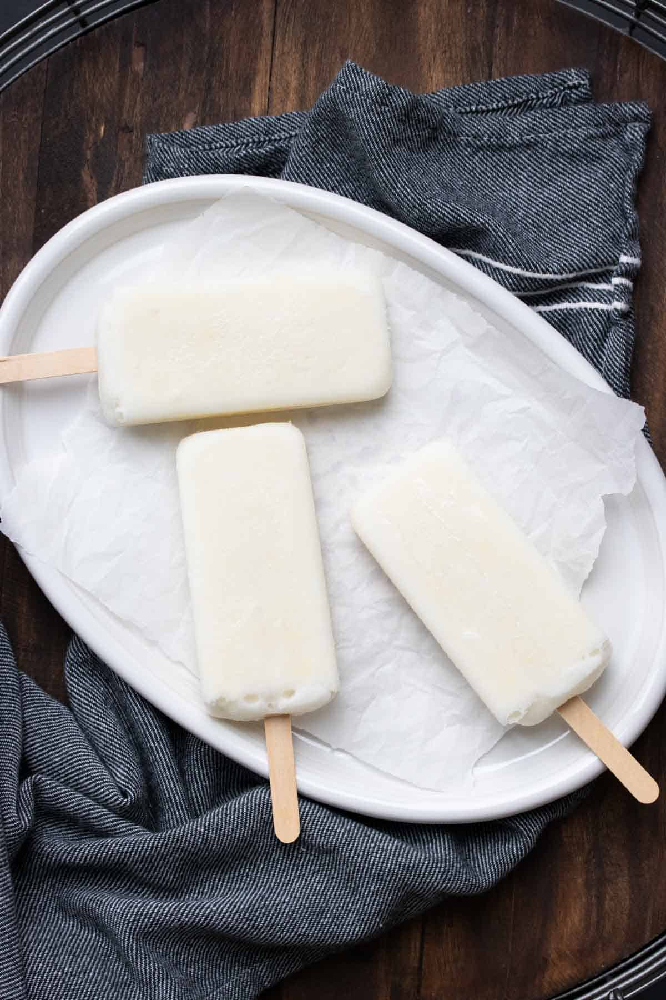

Our most loved recipes
Here is a collection of our featured recipes that are super easy to cook and taste absolutely delicious. To browse through more of our recipes in details, take a look at the dedicated sections in the links
Zucchini Fritters

Zucchini, carrot fritters are a healthy way of including veggies into the diet. Quick and easy to make these flavorful fritters made with Dish delicious spice blend are packed with flavors and lots of nutrients added through veggies. This makes a delicious and healthy snack or side dish which is grain-free, gluten-free, dairy-free low carb. Win win recipe for all those who love zucchini!
Ingredients
- 4 Medium size zucchini
- 2 Medium size carrots
- 2 Teaspoon Dish Delicious Blend
- 2 Table spoon Chickpea flour
- 2 Table spoon Rice flour
- Salt and Pepper to taste
- Chopped coriander
- Olive oil for brushing
Method
- In a medium size bowl grate zucchini, carrots
- To this add chopped coriander leaves, chickpea flour, rice flour, dish delicious blend, salt and pepper to taste give a good mix, I like to use hands it gives a batter good binding
- No need to add water as carrots and zucchini release its water which helps in binding the mixture together
- Heat the non stick skillet on a low medium flame, brush it with oil
- Pour the mixture with the help of a Tablespoon and carefully spread it out to form a disc shape
- Drizzle oil or just brush oil from all sides, let it cook for 2minutes on each side until golden brown and crispy
- Once done serve it with yogurt dipping and enjoy
Notes
- You can add baby spinach, basil leaves, chopped onions, spring onions and other herbs you like
- You can buy gram flour in any Indian store, its rich in fiber and iron and works great as a binder
- Adding rice flour makes fritters crispy
Turmeric Crepes
 \
\
Here we have this delicious Golden crepes breakfast, which requires only a handful of ingredients and in a few minutes of your time you make healthy, delicious feast for yourself.
These crepes are made with turmeric spice blend to give them that classic yellow colour but at the same time the flavours added into this blend will add a unique touch of goodness to your breakfast.
Ingredients
- 1.5 Cup Flour
- 2 Tablespoon Turmeric Latte Blend
- 2 Tablespoon Butter Melted / Olive oil or Coconut oil
- 1 ½ Cup Soy milk or any plant based milk
- 1 Teaspoon Baking powder
Method
- In a large mixing bowl, add all the ingredients together. Wisk until combined well and keep aside.
- Heat non-stick pan over medium-low heat, brush some oil on the surface of the pan when pan its hot. Pour about 1/3 cup of batter on the pan gently spread it as evenly and wide as possible. The trick is to hold a pan from the handle and rotate the batter all over the pan into a thin layer.
- Create a thin layer of the batter and spread some oil on the sides of the pan if it gets sticky. Cook for few seconds until the batter appears to show some bubbles on top and it changes its colour.
- Flip crepe over, cook for a few more seconds then remove from heat and repeat the same until you use the entire batter.
- Serve crepes with berry compote, passion fruit syrup, coconut cream and fresh seasonal fruits of your choice.
Notes
- You can use any non-stick pan to make these crepes no crepe pan needed.
- Make sure you make crepes on low medium heat, and if you see crepes bit sticky on side you can drizzle some oil on the side of the pan and then flip.
- I add jaggery as my sugar alternative but it is entirely up to you what you wish to add as your sugar substitute.
Cruchy Almond Flake popsicles
Dairy free easy to make with handful ingredients, coconutty, creamy and full of crunchy munchy almond flakes popsicles you simply can’t go past these adorable deliciousness. White Christmas cool treats to impress your Family and friends.
Ingredients
- Coconut Cream: 2 cups
- Almond milk: 1/4 cup
- Coconut condensed milk: 4tbsp or use Maple syrup
- Almond flakes: 3tbsp ( blanched almonds)
- Pinch salt
- Almond extract: 1tsp
Method
- Add all the ingredients in a blender and blend until well combined.
- Take popsicle molds of your choice, pour this mixture into a molds , insert the sticks and freeze it until solid.
- When ready remove from the freezer run luke warm water over the outside of the mold for few seconds in order to realise the popsicles, sprinkle some extra almonds and enjoy.